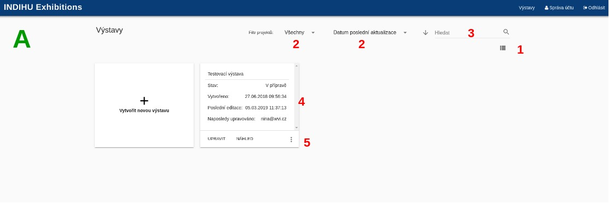
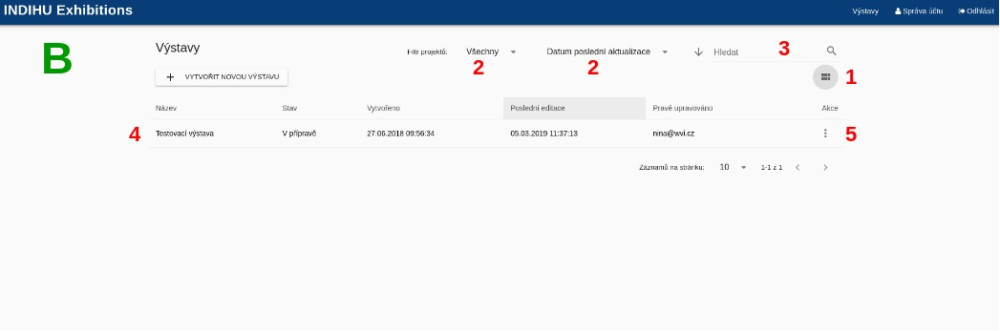
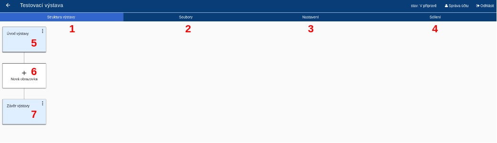
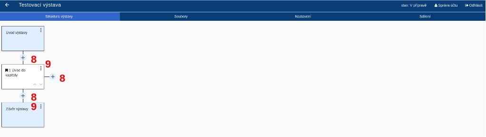
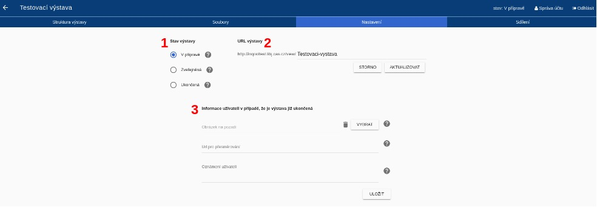

Základní fungování#
Vysvětlení pojmů#
Virtuální výstava#
Virtuální výstava je základním konceptem systému. Jedná se o ucelenou prezentaci určitého tématu, kterou vytvoříte pomocí obrazových, textových, audiovizuálních informací a interakce. Software INDIHU Exhibition je nazýván editorem výstav.
Tvůrce#
Tvůrce je člověk, který tvoří výstavu.
Návštěvník#
Pojmem "návštěvník" je označován uživatel, který navštíví web s virtuální výstavou.
Obrazovka#
Výstava je tvořena jednotlivými obrazovkami. Na obrazovkách může být různý obsah - obrázky, minihry, videa atd. V dalších částech manuálu (ODKAZ) se seznámíte s jednotlivými typy obrazovek a jejich ovládáním (např. Obrazovka s textem, Obrazovka s videem, Fotogalerie apod.). Při tvorbě výstavy postupně plníte obrazovky obsahem. Editor umožňuje označit obrazovku jako dokončenou, díky tomu si lépe udržíte přehled o tom, které obrazovky ještě musíte dodělat.
Kapitola#
Obrazovky je možné sdružovat do kapitol. Výstava však může být jen série po sobě jdoucích obrazovek. Mezi jednotlivými kapitolami mohou být samostatné obrazovky. Tvoření kapitol je nástrojem pro logické členění obsahu. Výstava může obsahovat jednu či více kapitol.
Kapitola vždy obsahuje úvodní stránku kapitoly s názvem a titulním obrázkem, který může být animovaný. Návštěvník může při prohlížení výstavy přeskakovat z jedné kapitoly do druhé skrze seznam "Kapitoly" v menu.
Minihra#
Speciálním typem obrazovek jsou Minihry. Minihry jsou interaktivní prvky, kdy je návštěvník postaven před řešení úkolu - např. má najít určité místo na obrázku nebo odkrýt obrázek). K realizaci miniher (ODKAZ) je třeba adekvátně připravit obsah.
Princip ovládání editoru#
- Registrace tvůrce: Pro využívání INDIHU Exhibition jako webové aplikace je třeba se zaregistrovat na adrese http://inqooltest.libj.cas.cz. Po vyplnění registračního formuláře je třeba registraci potvrdit pomocí odkazu zaslaného na zadaný e-mail. Tím vznikne žádost o vytvoření účtu, která je schválena administrátorem. Po schválení žádosti vzniká uživatelský účet s rolí Editor. O postupech v procesu registrace je žadatel informován emailovými notifikacemi.
- Přihlášení do editoru: Tvůrce se přihlašuje uživatelským jménem (e-mail) a heslem, které si zvolil při registraci. Tvůrce má možnost změnit svoje osobní údaje, heslo nebo zrušit účet pomocí tlačítka “Správa účtu”, které se nachází na pravé straně záhlaví.
- Založení výstavy
- Tvorba jednotlivých obrazovek
- Zveřejnění výstavy
- Ukončení výstavy
Tvůrce může mít v jednu chvíli více rozpracovaných výstav.
Seznam virtuálních výstav#
Po přihlášení do editoru se zobrazí seznam výstav. Tyto výstavy buď byly vytvořeny tvůrcem, nebo od jiného tvůrce získal právo prohlížení nebo editace.
Výstavy jsou zobrazeny graficky (obr. A) nebo seznam (obr. B). Pro přepínání zobrazení slouží ikonka v pravém horním rohu (1). Výstavy je možné filtrovat nebo řadit pomocí přepínačů v horní části okna (Naposledy použité, Název apod.) (2). Tvůrce může také vyhledávat v seznamu výstav podle názvu (3).
U každé výstavy jsou uvedeny základní informace, jako jsou: název výstavy, vlastník výstavy, stav výstavy a datum poslední změny (4).
U každé výstavy jsou pomocí tlačítka (5) k dispozici základní operace jako je přejmenování výstavy, sdílení výstavy či její části, export výstavy, změna stavu výstavy, zkopírování výstavy či smazání výstavy.


Detail výstavy#
Po otevření detailu výstavy se tvůrci zobrazí první záložka Struktura výstavy (1). Lze se přepnout na záložky Soubory (2) pro správu souborů k výstavě, Nastavení (3) pro obecná nastavení celé výstavy a Sdílení (4). Po založení výstavy obsahuje obrazovku Úvod výstavy (5), možnost přidání obrazovky (6) a Závěr výstavy (7).

Všechny změny, které tvůrce na detailu výstavy udělá, jsou okamžitě ukládány, není zde žádné tlačítko Uložit.
Struktura výstavy#
Každá výstava obsahuje dvě povinné části, obrazovku Úvod výstavy a Závěr výstavy (viz Detail výstavy). Mezi nimi může být výstava strukturována do kapitol nebo je možné ji sestavit ze samostatných obrazovek. Každá kapitola obsahuje povinně úvodní stránku kapitoly a pak další stránky s obsahem.
Po přidání vybrané obrazovky přidáváte další obrazovky pomocí tlačítka + (8). Postupným přidáváním dalších obrazovek a jejich přiřazování do kapitol vznikne výstava.
Struktura výstavy je zobrazená v grafické podobě. Editor umožňuje:
- Přidávat nové části výstavy
- Přesouvat stránky a kapitoly
- Mazat obrazovky
Každou stránku lze upravovat, zobrazit náhled nebo smazat pomocí menu (9).

Soubory výstavy#
Každá výstava disponuje svým vlastním souborovým depozitářem, do kterého si tvůrce může nahrávat soubory potřebné pro tvorbu výstavy. Tvůrce také může vytvářet adresářové struktury a přesouvat soubory mezi složkami. K dispozici je náhled obrázku a metadat souboru. Tyto soubory tvůrce dále využívá při vytváření a editaci jednotlivých stránek, proto je potřebné zabezpečit co nejvyšší přehlednost dokumentového repozitáře výstavy.
Nastavení#
Záložka obsahuje veškerá nastavení virtuální výstavy, která se týkají výstavy jako celku:
- Stav výstavy (1)
- URL výstavy (2)
- Informace návštěvníkovi v případě, že je výstava již ukončená (3)

Stav výstavy#
Každá výstava je v jednom z těchto stavů:
- V přípravě: Výstava je v přípravě. Obsah výstavy je možné libovolně upravovat. Výstava je přístupná pouze přihlášeným tvůrcům, se kterými je výstava sdílena.
- Zveřejněná: Výstava je veřejně dostupná přes svoje URL. Výstavu není možné upravovat.
- Ukončená: Výstava byla ukončena a není ani veřejně dostupná ani určena k dalším úpravám. V záložce Nastavení lze v části "Informace návštěvníkovi v případě, že je výstava již ukončená" vytvořit stránku, která se zobrazí návštěvník, když je tato výstava již nedostupná. Výstavu lze znovu převést do stavu V přípravě nebo Zveřejněná.
URL výstavy umožňuje nastavit libovolnou koncovku adresy tak, aby byla dobře použitelná a zapamatovatelná.
Ukončená výstava#
Pokud je výstava ukončená, je možné zobrazit návštěvníkovi náhradní obrazovku s těmito informacemi:
- Obrázek na pozadí
- URL pro přesměrování: web, kam je návštěvníkovi doporučeno pokračovat (jiná výstava nebo web instituce, která výstavu pořádala)
- Oznámení návštěvníkovi: Krátký informační text (např. poděkování za zájem)
Sdílení s dalšími tvůrci#
Výstavu lze sdílet s dalšími tvůrci. Ostatním tvůrcům je možné dát práva jen k prohlížení nebo i k editaci. Můžete přidávat jen tvůrce, kteří jsou do editoru zaregistrovaní. K přidání další osoby potřebujete znát jeho e-mail, který použil k registraci. Neregistrovanému člověku je možné zaslat e-mailovou pozvánku s výzvou k registraci. O sdílení výstavy budete informováni e-mailem.
Výstavu je dále možné sdílet odesláním URL adresy výstavy, a to jak odkazu na titulní obrazovku, tak na libovolnou kapitolu či obrazovku. Avšak stále platí, že pokud výstava není ve stavu Zveřejněná, nikdo jiný než ostatní tvůrci ji neuvidí.
Zamykání výstavy pro editaci#
Pokud některý z tvůrců začne výstavu editovat, zamkne tuto výstavu pro editaci ostatním tvůrcům a to standardně na 1 minutu. Informace o tom, který tvůrce právě výstavu upravuje, je viditelná jak v seznamu výstav, tak na detailu výstavy. Ostatní tvůrci mohou výstavu prohlížet, ale ne upravovat.